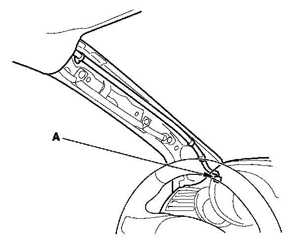
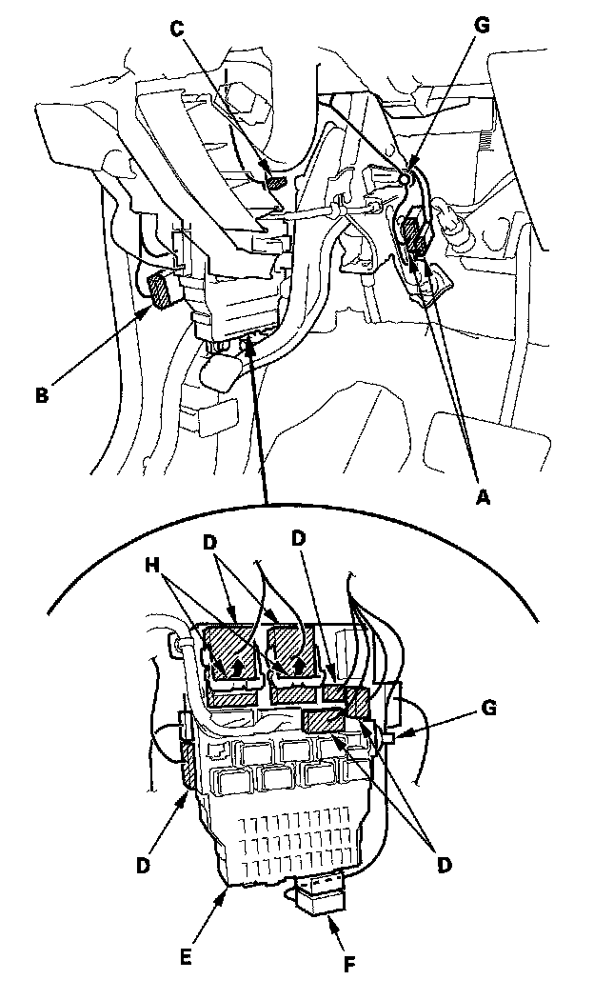
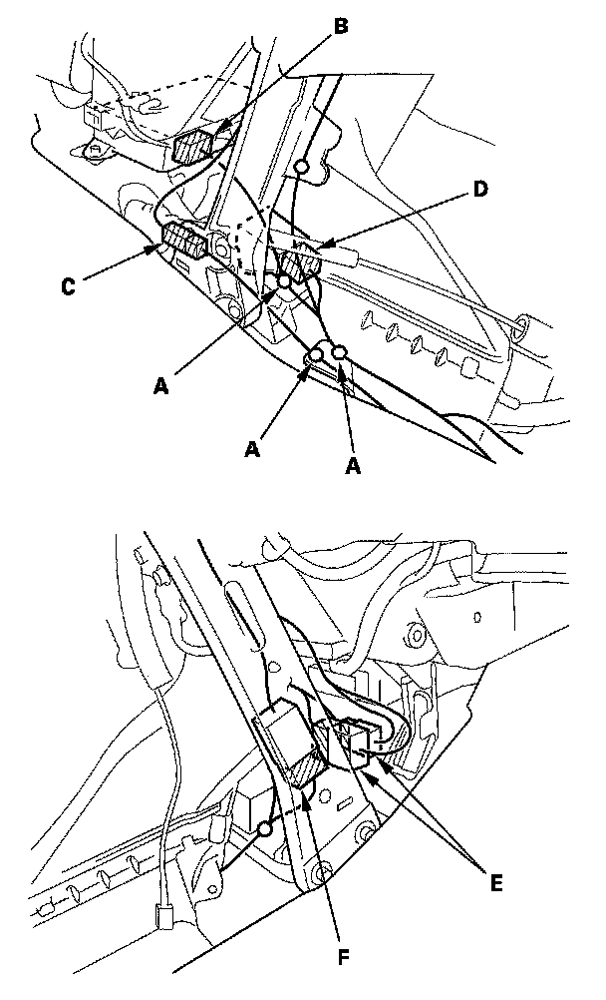
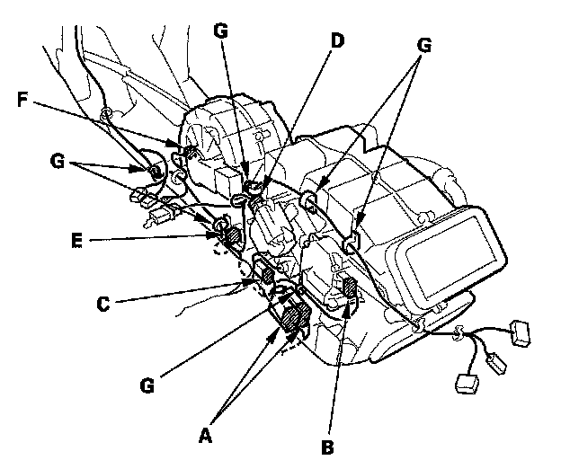
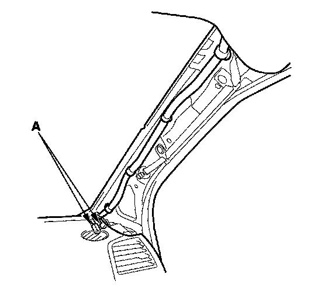
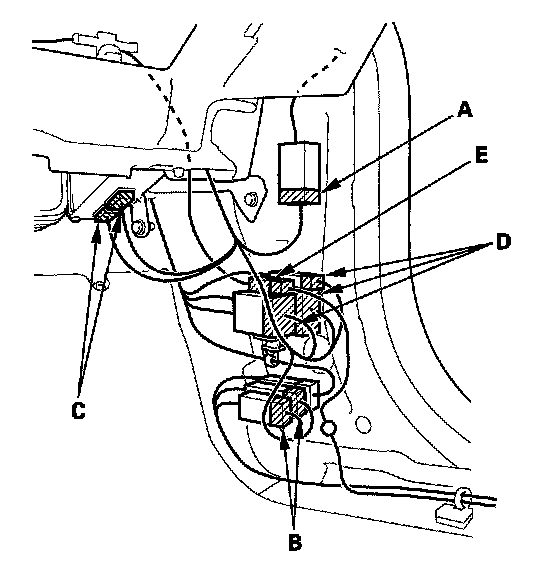
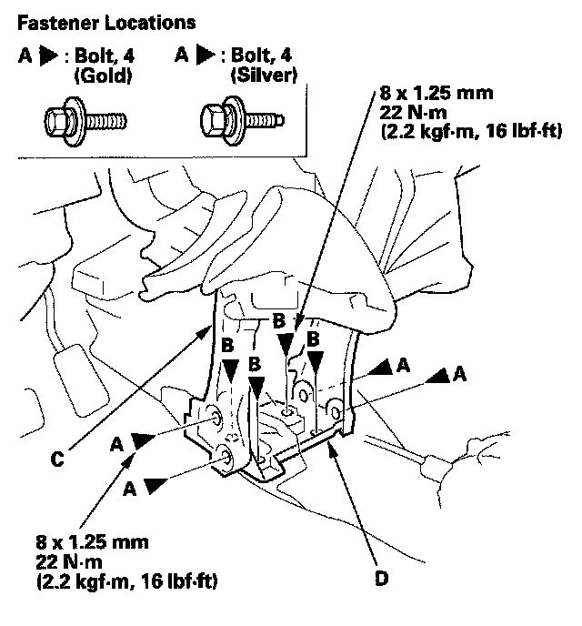
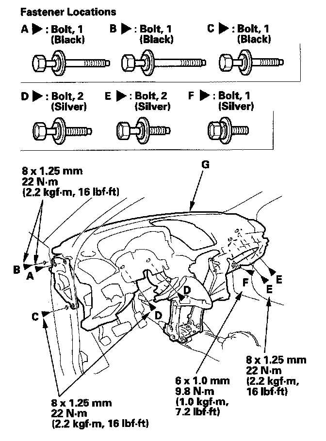
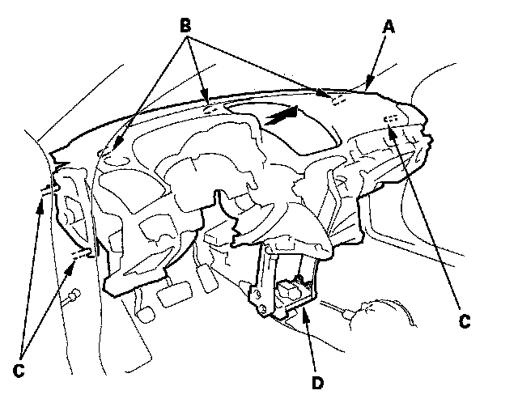

Dashboard/Steering Hanger Beam
Dashboard/Steering Hanger Beam Removal/InstallationSpecial Tools Required
KTC trim tool set SOJATP2014 *
* Available through the American Honda Tool and Equipment Program
SRS components are located in this area. Review the SRS component locations and the precautions and procedures before doing repairs or service.
NOTE:
- Put on gloves to protect your hands.
- Use the appropriate tool from the KTC trim tool set to avoid damage when removing components.
- Have an assistant help you when removing and installing the dashboard.
- Take care not to scratch the dashboard, body and other related parts.
1. Make sure you have the anti-theft codes for the audio and the navigation system (if equipped).
2. Disconnect the negative cable form the battery, and wait at least 3 minutes before beginning work.
3. Remove these items:
- Driver's dashboard lower cover
- Driver's dashboard undercover
- Passenger's dashboard undercover
- Center console
- Glove box
- Driver's dashboard outer trim
- Driver's dashboard lower bracket and dashboard lower bracket
- Kick panels, both sides
- A-pillar trim, both sides
- A-pillar corner trim
- Steering column covers
4. Disconnect the combination switch connectors, ignition switch connectors, driver's airbag connector, cable reel connector, steering angle sensor connector, immobilizer control unit connector, tilt/telescopic motor connectors, and tilt/telescopic control unit connectors, detach the harness clips and remove the mounting bolts, then lower the steering column . To prevent damage to the steering column, wrap it with a shop towel.
5. Remove the parking brake lever mounting bolt and screw, then lower the lever
Driver's side

6. Disconnect the moonroof wire harness connector (A).

7. From under the dash, disconnect the engine compartment wire harness connectors (A), floor wire harness connector (B), parking brake switch connector (C), and dashboard wire harness connectors (D) from the driver's under-dash fuse/relay box (E), detach the fuse connector (F), and then release the wire harness clips (G).
NOTE: Lift the large wire harness connector locks (H) before trying to remove the connectors from the fuse/relay box.
Middle portion

8. Detach the harness clips (A), and disconnect the SRS unit connectors (B), GPS antenna connectors (C) (with navigation system), yaw rate-lateral acceleration sensor connector (D), A/C subharness connectors (E), and floor wire harness connector (F).

9. Disconnect the floor wire harness connector(s) (A), rear mode control motor connector (B), rear evaporator temperature sensor connector (C), rear air mix control motor connector (D), rear power transistor connector (E), rear blower motor connector (F). Detach the harness clips (G).
Passenger's side

10. With rear entertainment system: Disconnect the rear entertainment system wire harness connectors (A).

11. From under the dash, disconnect the passenger's door wire harness connectors (A), the floor wire harness connector (B), audio amplifier connectors (C), engine compartment wire harness connector (D), and radio antenna connectors (E).

12. Remove the bolts (A, B) securing the dashboard (C) and center bracket (D).

13. Open the driver's door, and remove the bolts (A, B, C). Remove the remaining bolts (D, E, F) securing the dashboard (G).

14. Lift up on the dashboard (A) to release it from the guide pins (B, C).
15. Carefully remove the dashboard through either front door opening.
NOTE: Do not rest the dashboard on its lower center cover opening, or it may be damaged. Lay it on its front or back.
16. Remove the center bracket (D).
17. Install the dashboard in the reverse order of removal, and note these items:
- Position the center bracket on the body, then reinstall the dashboard on the body. After tightening the dashboard mounting bolts, tighten the center bracket mounting bolts, and then tighten the center frame mounting bolts.
- Make sure the dashboard fits onto the guide pins correctly.
- Before tightening the bolts, make sure the wire harnesses are not pinched.
- Make sure the connectors are plugged in properly.
- Reconnect the negative cable to the battery.
- Enter the anti-theft codes for the audio and navigation system (if equipped).
- Set the clock.
- Check for any DTCs that may have been set during repairs, and clear them.
- Do the steering column position memorization.